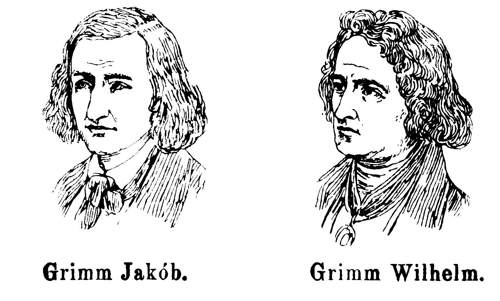

Jacob Ludwig Karl Grimm and Wilhelm Carl Grimm were born on 4 January 1785 and 24 February 1786, respectively, in Hanau in the Landgraviate of Hesse-Kassel, within the Holy Roman Empire (present-day Germany), to Philipp Wilhelm Grimm, a jurist, and Dorothea Grimm (née Zimmer), daughter of a Kassel city councilman.They were the second- and third-eldest surviving siblings in a family of nine children, three of whom died in infancy. In 1791 the family moved to the countryside town of Steinau during Philipp's employment there as a district magistrate (Amtmann). The family became prominent members of the community, residing in a large home surrounded by fields. Biographer Jack Zipes writes that the brothers were happy in Steinau and "clearly fond of country life".The children were educated at home by private tutors, receiving strict instruction as Lutherans, which instilled in both a lifelong religious faith. Later, they attended local schools.
By the time they attended university in Kassel in 1798, they were without a male provider (their grandfather died that year), forcing them to rely entirely on each other and become exceptionally close. The two brothers differed in temperament—Jacob was introspective and Wilhelm was outgoing (although he often suffered from ill health)—but they shared a strong work ethic and excelled in their studies. In Kassel they became acutely aware of their inferior social status relative to "high-born" students who received more attention. Each brother graduated at the head of his class: Jacob in 1803 and Wilhelm in 1804 (he missed a year of school due to scarlet fever)